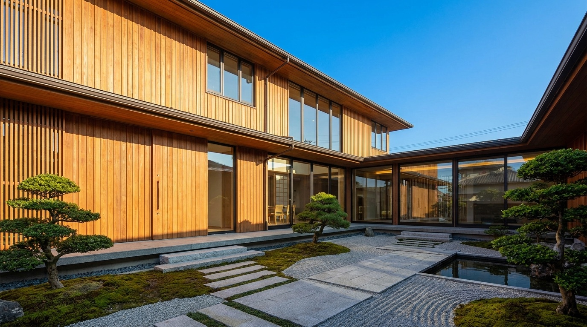
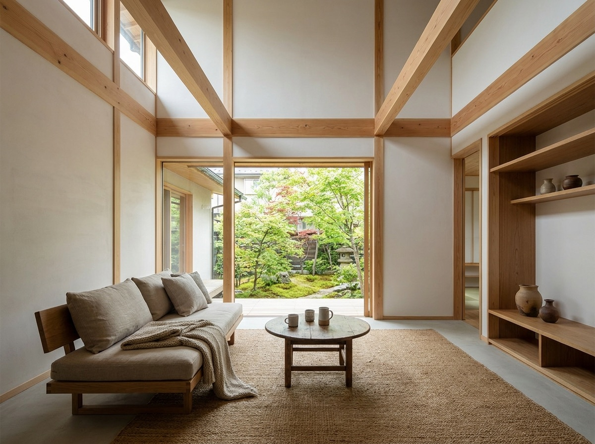
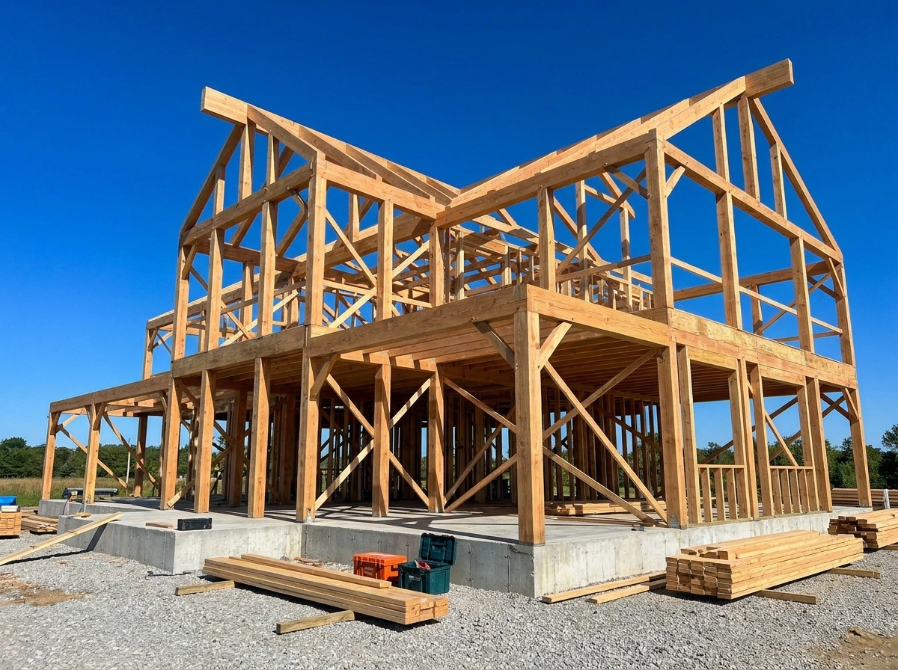
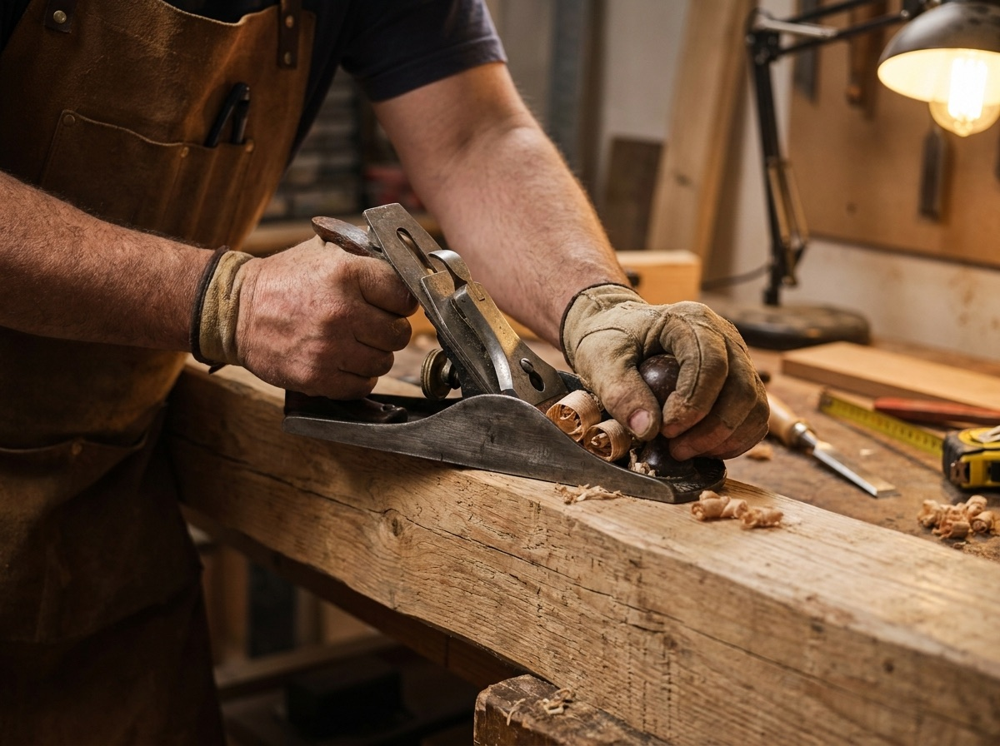

NATURAL WOOD HOUSE, ASAHIKAWA
自然素材の注文住宅。旭川の気候に寄り添う、一棟一棟の家づくりを。

30年先も、心地よくいられる家を。
流行のデザインよりも、住まう人の暮らしと、旭川の厳しい冬に寄り添うこと。無垢の木、珪藻土、自然の風。素材そのものが持つ心地よさを大切にしています。
設計から施工まで自社の大工が一貫して手がけるから、細部まで妥協しません。建てて終わりではなく、末永いお付き合いを。


来場予約・家づくり相談・資金計画のご相談まで、LINEでお気軽に。施工事例集(PDF)のお渡しもしています。